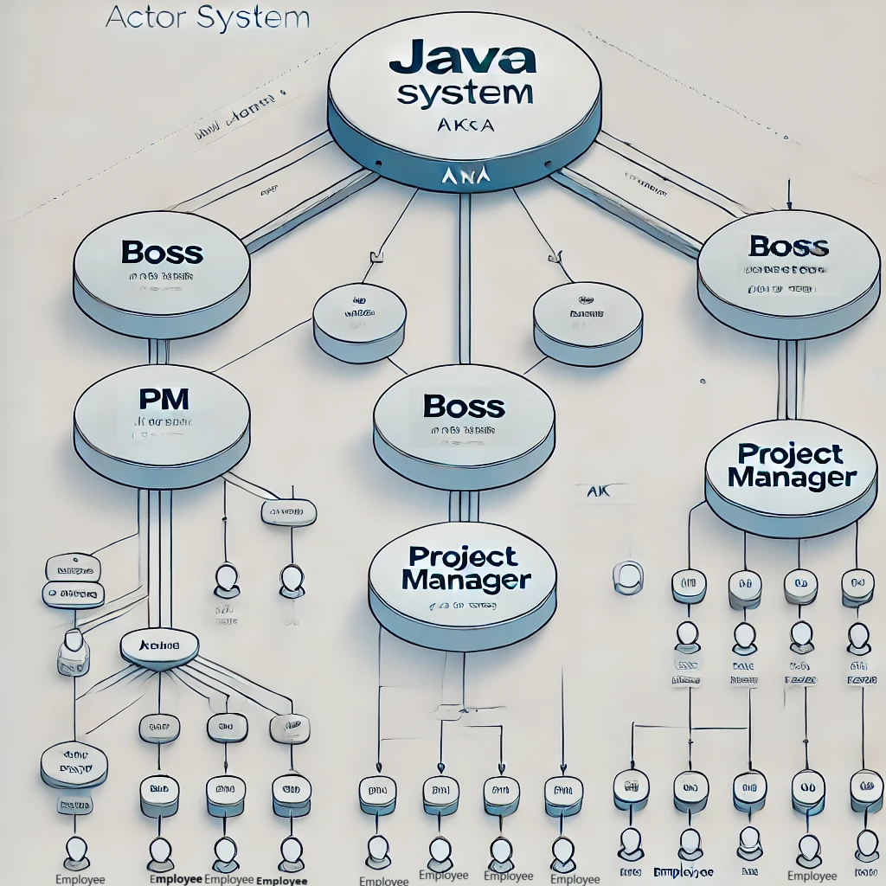

University of Bologna
DISI
Assignement 3 report:
Message Oriented and Distributed Systems
Matteo Santoro
Supervisor: Alessandro Ricci
2024-12-08
School of Mathematical, Physical and Computational Sciences
La soluzione ad attori del problema degli Assignement precedenti è stata implementata in java, utilizzando la libreria Akka.
La gerarchia è composta da tre principali livelli di attori: Boss, Pm e Employee, ciascuno con ruoli e responsabilità ben definiti.
L’attore Boss è la radice della gerarchia ed è
responsabile dell’intero processo di gestione dei task. Riceve il
percorso di una directory (directoryPath) e popola una
lista di compiti (pathList) utilizzando la funzione
Utils.populateListOfPaths. Dopo aver suddiviso i compiti in
sottogruppi basandosi sul numero di lavoratori disponibili, il
Boss invia un messaggio Pm.Order al suo
subordinato Pm, specificando:
La directory di lavoro.
I compiti da eseguire suddivisi in blocchi.
Eventuali riferimenti per risposte future.
Inoltre, il Boss monitora l’elaborazione tramite i report inviati dagli Employee, aggiornando i dati attraverso un’interfaccia che organizza i risultati dei task. Questo lo rende il punto centrale della raccolta dei risultati.
Il Pm agisce come intermediario tra il
Boss e i lavoratori effettivi
(Employee). Al momento della creazione, genera una
serie di attori Employee, il cui numero è specificato
dalla costante NUMBER_OF_WORKERS. Il Pm
riceve i compiti dal Boss e li assegna ai suoi
lavoratori utilizzando il messaggio Ordered, suddividendo
equamente i task.
Durante l’elaborazione, il Pm riceve i report dagli
Employee tramite messaggi di tipo
Employee.Report e li inoltra al Boss.
In caso di comandi globali come la pausa (StopMsg) o la
ripresa (ResumeMsg), il Pm inoltra i
messaggi a tutti gli Employee, garantendo un controllo
centralizzato.
Gli attori Employee rappresentano i lavoratori del sistema. Ognuno riceve un insieme di compiti dal Pm e li elabora uno alla volta. Le principali caratteristiche di un Employee includono:
Gestione Asincrona dei Task: I task vengono
elaborati utilizzando una funzione di utilità
(Utils.linesWithBufferInputStream) e i risultati vengono
inviati tramite un report al mittente (di norma il
Pm).
Pausa e Ripresa: Gli Employee
possono fermare l’elaborazione dei task tramite il messaggio
StopMsg e riprenderla tramite ResumeMsg.
Questa capacità migliora la resilienza del sistema e consente una
gestione flessibile dei lavoratori.
Chiusura Ciclica dei Task: Utilizzano un
iteratore (taskIterator) per avanzare nel ciclo di compiti
assegnati e inviano notifiche al completamento.
L’interazione tra gli attori è basata su un flusso di messaggi ben definito:
Boss → Pm: Invio dei compiti tramite
Pm.Order.
Pm → Employee: Assegnazione dei task tramite
Ordered.
Employee → Pm: Invio dei risultati dei task
tramite Employee.Report.
Pm → Boss: Trasmissione dei report degli Employee.
Questa struttura modulare rende il sistema scalabile e facile da mantenere, poiché ogni livello si occupa esclusivamente di un insieme ben definito di responsabilità.
Modularità: Ogni attore ha ruoli chiari, facilitando estensioni o modifiche.
Parallelismo: L’uso degli attori consente un’elaborazione parallela dei task.
Resilienza: La gestione di eventi come pause e riprese garantisce continuità operativa.
Scalabilità: È possibile aggiungere più attori Pm o Employee per gestire un numero maggiore di compiti senza modificare l’architettura principale.

La seconda parte dell’assignement consisteva nell’implementazione di una versoine di Pixel art, un software per la colorazione collaborativa di una matrice, tramite un gestore di scambi di messaggi. Le modifiche sulla propria matrice e ricezione di quelle degli altri utenti devono essere visibili sulla propria "versione locale" senza dover condividere nessuna porzione di memoria.
Durante la creazione di ogni client viene attributo un clientID randomico. Ogni messaggio viene inviato sullo stesso Exchange che in questo contesto è di tipo Topic, per poter inviare messaggi di determinati contesti in code separate. I contesti di interesse per questo esercizio, e i loro utilizzi sono i seguenti:
Mouse: scambio della posizione dei puntatori di tutti i client collegati alla rete per poterli visualizzare contemporaneamente.
Brush: notifica di cambio colore real-time del brush dei client.
Color: evento di colorazione di un pixel dei client.
History: ???? storia di eventi di colorazione pixel per i nuovi client che si collegano in un momento successivo.
Exit: ???? notifica di uscita di un client e rimozione del brush.
La pubblicazione di messaggi in queste code è, giustamente, collegata agli eventi che vogliono catturare. Prendendo ad esempio il cambio di colore di un brush. La classe di gestione dei pennelli è stata estesa aggiungendo a ciascun brush l’identificatore del proprio client. Ogni messaggio pubblicato sulla coda dei pennelli viene intercettato e passato a questa classe, che contiene una lista dei brush e identifica quello che ha cambiato colore, aggiornandolo nel client locale che ha ricevuto il messaggio. Nello stesso modo l’evento di modifica di colore notifica questo evento pubblicando un messaggio che contiene le informazioni necessarie agli altri client per modificare la grafica. visto la semplicità del contesto i messaggi contengono tutte le informazioni, come identificatore e colore, in una stringa separate da un carattere speciale, in questo caso il ’_’.
Un ragionamento analogo è stato fatto per ogni altro evento catturato utile al funzionamento corretto dell’applicazione, come il movimento del puntatore degli altri client o il cambio di colore del pennello.